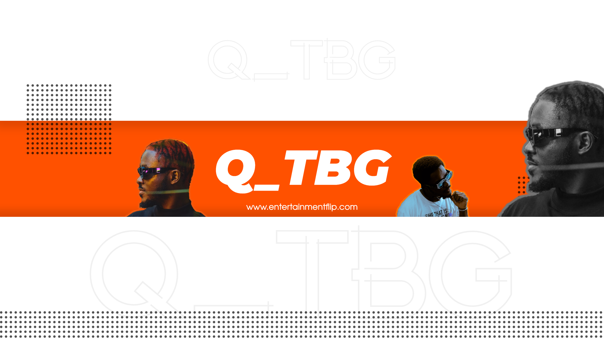

Q_tbg: A Musical Journey of Authenticity and Purpose

In the world of entertainment, where artists often walk a fine line between self-expression and commercial appeal, Q_tbg emerges as a true creative visionary. As a musician and creative director, he's carving a unique path that reflects his deep connection to his craft and a commitment to authenticity. In a candid interview, Q_tbg shares his artistic journey, influences, and insights, giving us a glimpse into his extraordinary world.
Q_tbg's introduction to the world of music was no mere accident. Raised in a family where the rhythm of life was set by his uncles, who were both managers and DJs, and his mother's side, filled with guitarists and singers, music was a constant presence. It didn't take long for Q_tbg to realize that he had a talent for crafting poetic words that stirred emotions. This soon evolved into writing songs, and an encounter with a wise Rastafarian gentleman in the National Symphony Orchestra introduced him to the world of the guitar. It was through music that he found solace and happiness. This was the genesis of his artistic journey.
Q_tbg has celebrated numerous milestones on his artistic voyage. Directing, shooting, and editing his first music video marked a significant achievement. The sense of creative control and expression he experienced was transformative. Receiving his first award was equally gratifying. The recognition he received validated his dedication and talent. His journey also includes the joy of earning from streaming his music, marking another vital milestone in his career.
One of the most poignant moments in Q_tbg's artistic journey was when he witnessed someone cry
because of the impact of his lyrics. This profound experience forever altered his approach to music.
It revealed to him the profound influence that artists can have on their audience and the weight of
their responsibility. It was a poignant reminder that music is not merely sound but an emotional and
spiritual connection that binds artist and listener.
Q_tbg's artistry is marked by its deeply personal and resonant nature. He begins his creative
process by crafting music that resonates with his own experiences and emotions. These raw and
unfiltered moments are the seeds from which his songs grow. Drawing inspiration from an eclectic
range of global music, he weaves these influences into his work. The end result is music that
remains true to his personal tastes while also connecting with a broad audience. His songs often
carry the essence of his unique and unpredictable life experiences, further setting him apart from
the crowd.
Q_tbg has exciting projects on the horizon. He's working on music videos for his latest tape, "Play This When You Miss Me," a release that promises to captivate audiences with its emotional depth and relatability. Additionally, he anticipates a new collaboration with his label mate, "FRD," which will be released once their previous work hits 50,000 plays on Spotify.
Themes of mental health, love, sex, and personal growth underpin Q_tbg's art. He believes that mental health is a topic that deserves more attention, particularly in Africa, where it is often overlooked. Through his music, he aims to bring these important issues into the spotlight and offer his listeners a platform for reflection and discussion.Q_tbg's work is a tapestry of influences, reflecting his diverse musical taste. Artists like Kid Cudi, PartyNextDoor, The Weeknd, Amaarae, R2bees, Osibisa, Abba, Bee Gees, Earth, Wind & Fire, Sean Paul, Gregory Isaacs, Sister Nancy, Pharrell, and Jay-Z have all left their mark on his artistry. It's a rich mosaic of inspiration that shapes his unique sound.
Q_tbg's daily routine revolves around a list of creative to-dos. He meditates and prays in the morning, then navigates his social media. Most importantly, he delves into his list of creative ideas and determines which ones are ready for fruition. Some days are spent on the farm, while others involve time at the rehab center, revealing the depth of his commitment to personal growth and well-being.
Q_tbg's artistic journey has been marked by personal and professional challenges. As a young artist,
he struggled to chart his own path without a mentor. This period was turbulent, but it ultimately
shaped his independent spirit and determination.
Another challenge he faced was the lure of excess – girls and drugs. He acknowledges that he lost
his way for a time but managed to reclaim his life through sheer resilience and a profound
commitment to his craft.